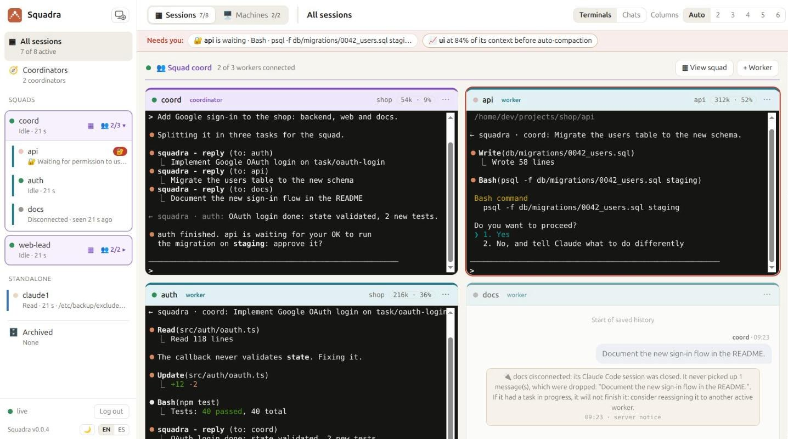
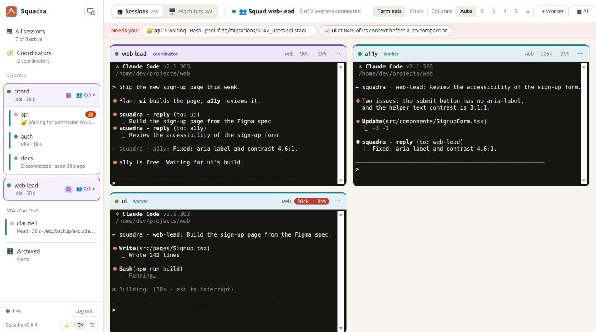

Multi-agent Claude Code,
with a coordinator and a live dashboard
Squadra runs squads of Claude Code agents on any of your machines. A coordinator agent splits the work, approves safe actions and only asks you what matters. You watch it all live in your browser.



What you can do with it
Build across repositories at once
Backend, web app and mobile app, each with its own worker, kept in step by the coordinator.
Split a big job into parallel pieces
A migration, a refactor or more tests: one Claude Code worker per module, running at the same time.
Leave it working unattended
Workers decide the technical details; the coordinator approves their safe actions and escalates only what is critical.
Watch from anywhere
Every agent live in your browser, a web terminal into each one, and a "Needs you" bar for whoever is waiting.
Use all your computers and accounts
Each agent runs on any machine you add, with that machine's Claude Code login. Agents connect out; no open ports.
Self-hosted, no dependencies
One Node.js server, or a Docker image. Automatic HTTPS when you give it a domain. MIT licensed.
How it compares
| Claude Code subagents | Claude Code Agent Teams | Squadra | |
|---|---|---|---|
| Agents run on | the same session | the same machine | any machine you add, each with its own login |
| Watch them | one terminal | one terminal each | one live web dashboard, from any browser |
| Unattended work | you approve each prompt | you approve each prompt | the coordinator approves safe actions |
| Open and reopen sessions | manually | manually | from the dashboard, with a web terminal |
| Several repositories | no | the lead's directory | one worker per repository, where it lives |
Squadra does not replace Claude Code: every agent is a normal interactive claude, so you can step in and type into any of them at any time.
Install in two steps
git clone https://github.com/roke22/Squadra.git squadra && cd squadra
node server/server.js # dashboard at http://127.0.0.1:7787Then open Machines → Add machine in the dashboard and run the one command it shows on each computer where agents should work. Full instructions, Docker and HTTPS setup are in the README.

What you need
- A Claude Code account: a claude.ai plan (Pro, Max, Team or Enterprise) or an Anthropic Console API key.
- One computer for the dashboard with Node.js 22 or Docker. It can be the same computer where your agents run.